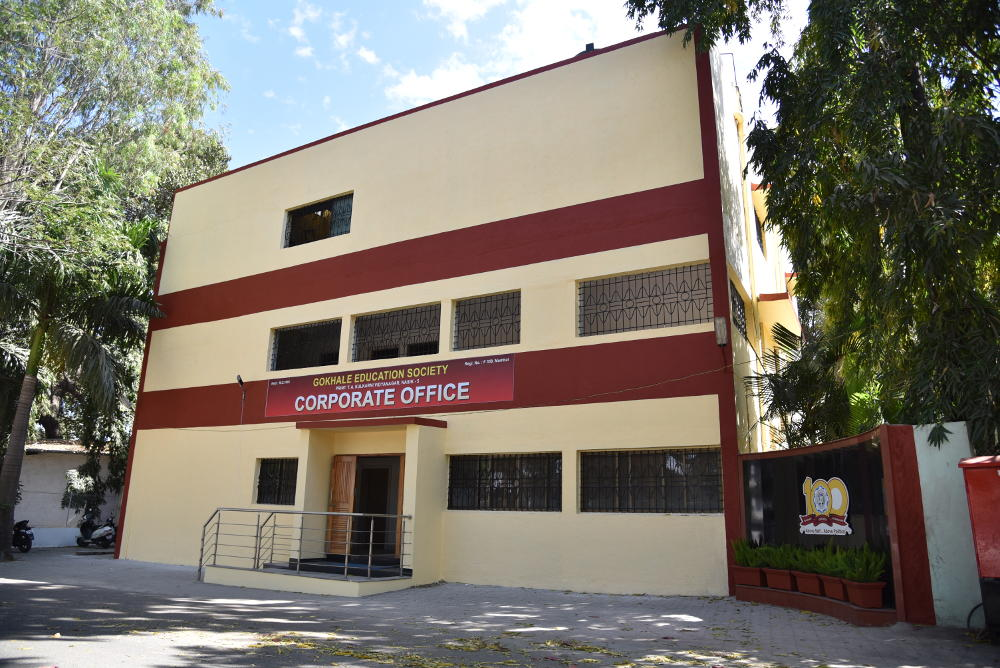

Guru of Mahatma Gandhi.
After Whom our society is named.
A Great Social Worker
Founder of the Society.
Gokhale Education Society was established on 19th February 1918, third death anniversary of Namdar Gopal Krishana Gokhale, by his illustrious disciple late Principal Trimbak Appa Kulkarni.
The Society, which has always been managed by a team of dedicated teachers, has established many educational institions in both urban and rural areas. The Society has taken a keen interest in developing the weaker sections, the tribal people, the industrial labourers and agricultural classes, by starting many educational institutions at Nashik, Bordi, Talasari, Kosbad, Jawhar, Suryanagar, Sangamner, Girgaon, Borivili and Parel.
The Society runs more than 75 educational instiutions consisting of 15 Degree Colleges, 10 Junior Colleges, 3 Research Centres, 15 Secondary Schools, 15 Pre-Primary and Primary Schools and 23 other institutions ( Including Hostels ). The Society provides educational facilities to more than 1 Lakh students each year with the help, co-operation and inspiring involvement of about 3000 Teaching and Non – Teaching Staff members.
President
Prin. S. B. Pandit
Former Principal, Nashik-Road College
Secretary
Sir Dr. M.S. Gosavi
Director, J.D.C. Bytco Institute of Management Studies & Research, Nashik - 5
Shri J. K. Pathare
( Industrial Entrepreneur )
Chairman, Maxwell Industries (P) Ltd, Andheri (E), Mumbai
Shri Nitinbhai Mehta
( Distinguished Past Student )
Chairman, Nitin mehta Group of Companies, Borivali (W), Mumbai
Dr. Arun Nigwekar
Former Chairman, UGC, Delhi
Chairman, Science & Technology Park, University of Pune, Pune
Shri J. R. Sapat - Joshi
( Distinguished Past Student )
Chairman, Sapat International (P) Ltd., Worli, Mumbai
Former Principal of Society's RNC Arts, JDB Commerce & NSC Science College, Nashik Road
Former Principal of Society's B.V. Arts, Commerce & Science Collge, Borivalli (W), Mumbai
Founder Director, JDC IMSR, Nashik & Founder Principal of B.Y.K. (Sinnar) College of Commerce, Nashik
Principal, B.V. Arts, Commerce & Science Collge, Borivalli (W), Mumbai
Principal, SMRK-BK-AK Mahila Mahavidyalaya, Nashik
Former Principal of Society's SPH High School, Bordi
Prin. S. B. Pandit
President & Chairman
Shivshakti, Prin. T. A. Kulkarni Colony
Nashik.
Dr. R. J. Gujrathi
Vice Chairman
C/ 303 Satyam, Opp. Post Office,
M.H.B. Colony, Gorai Road,
Borivali (West ) Mumbai.
Sir Dr. M. S. Gosavi
Secretary,
Director, JDC Bytco IMSR,
7, Anubandh, Model Colony,
Nashik.
Prof. B. Devarajah
Zonal Secretary – Nashik
Shyam Villa, Opp. Patil Presidency,
Vise Mala, HPT College Road,
Nashik.
Prin. Dr. B. V. Girdhari
Zonal Secretary – Mumbai
‘Parnashree’ Housing Society,
Behind HPT College,
Nashik.
Prin. P. A. Raut
Zonal Secretary – Thane
C/o. S.P.H. High School, Bordi,
Dist. Thane.
Shri Vilas J. Save
Superintendent – Thane Zone
S.P.H. High School, Bordi,
Dist. Thane.
Dr. Smt. D. P. Deshpande
Principal
SMRK-BK-AK Mahila Mahavidyalaya,
Nashik.
Dr. R. M. Kulkarni
Principal
R.N.C. Arts, J.D.B. Commerce & N.S.C. Science College, Nasik Road.
Dr. Smt. A. A. Verulkar
Principal
JDC Bytco Institute of Management Studies & Research,
Nashik.
Shri V. N. Suryavanshi
Principal
HPT Arts & RYK Science College,
Nashik.
Dr. D. D. Kalal
Principal
Arts & Commerce College,
Jawhar, Dist. Thane.
Dr. Mrs. S. V. Sant
Principal
B.V. Arts, Commerce & Science College, Behind MHB Colony,
Gorai Road, Borivali (W), Mumbai.
Dr. Smt. A. S. Kulkarni
Principal
N.B. Mehta College of Science, Bordi,
Dist. Thane.
Dr. Smt. R.Y. Bam
Vice – Principal
College of Education, Sangamner,
Dist. Ahmednagar
Shri Y. R. Bhavsar
Assistant Professor of Physics, F.E. Co-ordinator,
College of Engineering, Nashik.